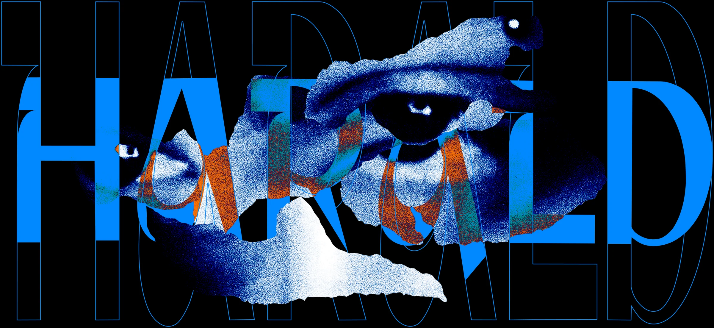
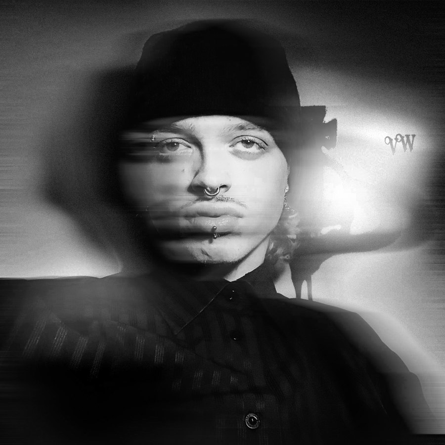
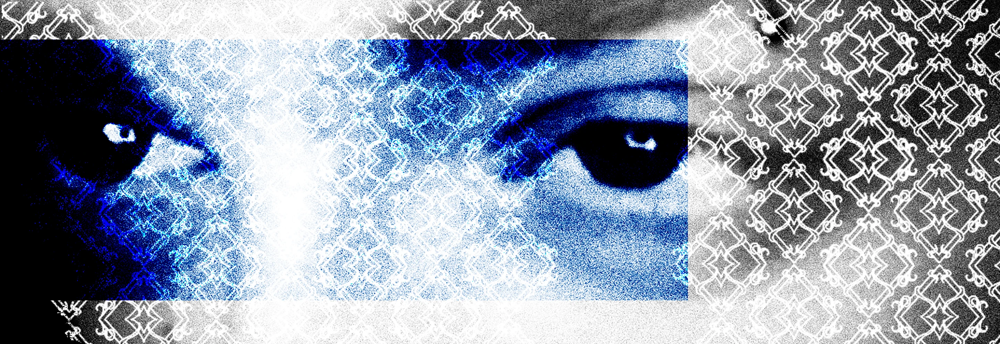

A designer shaped by fashion, art and a love for detail.
About

Raised with a pencil in my hand, I've spent my life discovering new talents from branding to motion, from illustration to fashion. My sense of style defines the way I look at design.
Me
Every design I make carries a piece of myself. I bring my background, my taste and the way I see the world into each project, so nothing I create feels generic. Behind every piece, you can sense the person who made it.
Aldharvisio Digital work


Where lines move, and patterns breathe depth. A style built from gothic filigree tribal detailing, neo-tribal ornamental structures, and organic tribal linework pushed through a cyber lens.
I'm drawn to it because I see movement in the density and depth in the layering: identity expressed through rhythm, not just shape.
Where ideas become brands, screens and motion. A banknote series, a full brand identity, my first lyric video and a jewellery shoot.
Every project starts from one concept and gets its own visual language, so each piece feels made for its story.
